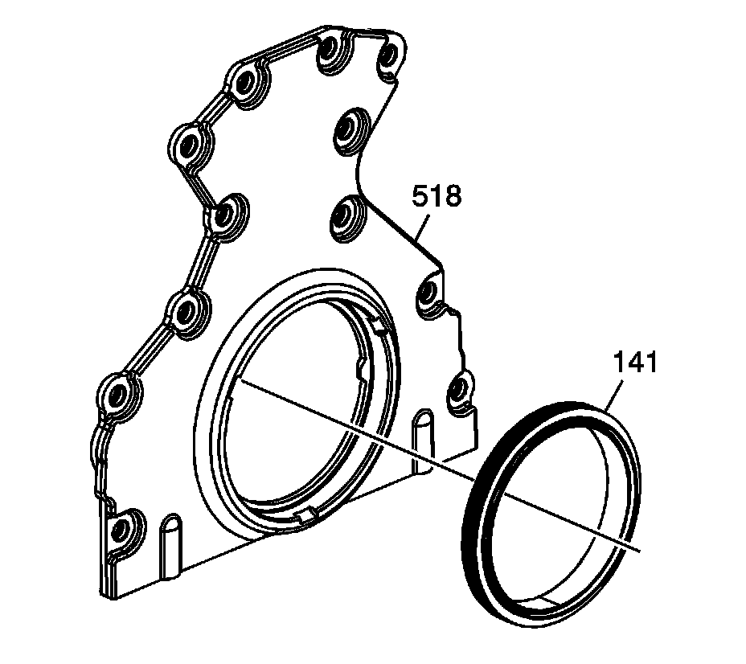

57. Crankshaft Rear Oil Seal Housing Cleaning and Inspection
Crankshaft Rear Oil Seal Housing Cleaning and Inspection

Important:
^ Do not use the crankshaft rear oil seal again. Install a NEW crankshaft oil seal during assembly.
^ Do not use the rear housing-to-engine block gasket again. Install a NEW gasket during assembly.
Remove the crankshaft oil seal (141) from the rear housing.
1. Clean the housing in solvent. Remove the sealant from the housing oil pan surface. Refer to Replacing Engine Gaskets.
Caution: Refer to Safety Glasses Caution.
2. Dry the housing with compressed air.
3. Inspect the gasket sealing surfaces for excessive scratches or gouging.
4. Inspect the housing-to-oil pan threaded bolt holes for damaged threads or debris.
5. Inspect the crankshaft oil seal mounting bore for damage.